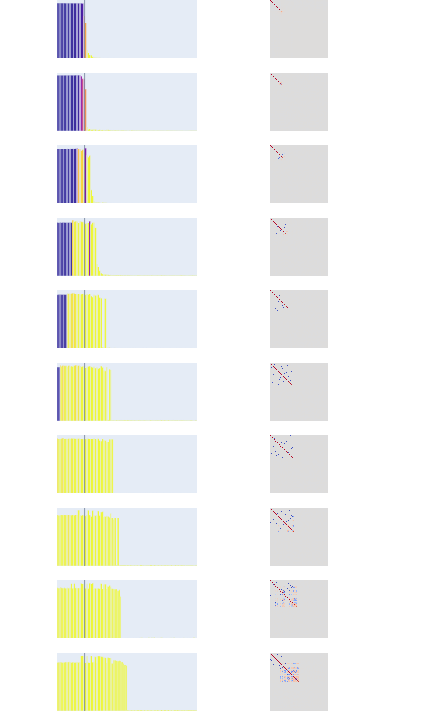

ఈ క్రింది విభాగం టాయ్ మోడల్స్ ఆఫ్ సూపర్పొజిషన్ కు అనుకరణం
శుభ్రమైన వివరణ మనకు భద్రతా భావాన్ని ఇస్తుంది. ఒకవేళ మీరు మిషన్ క్రిటికల్ సన్నివేశాల్లో నమూనాను విస్తరించాల్సిన ఉపయోగ సందర్భంలో పనిచేసి ఉంటే, విసుగు చెందకుండా ఉండలేరు. విషయాలు మానవ అర్థం చేసుకోగల పరిధిలోకి రానప్పుడు.
ఆదర్శ పరిస్థితి అంటే వ్యక్తిగత న్యూరాన్ సక్రియణలు లక్షణాలతో ఉండటం.
ఈ దృగ్విషయాన్ని పరిమాణీకరించే అనేక పనులు జరిగాయి. మేము కొన్ని న్యూరాన్లు లక్షణాలకు శుభ్రంగా మ్యాపింగ్ అవుతున్నాయని గమనించాం. లక్షణాలకు ఇదే చెప్పలేం, ఇది చాలా అరుదు మరియు శ్రమతో కూడుకున్నది.
న్యూరల్ నెట్వర్క్లు సక్రియణ స్థలంలో లక్షణాలను దిశలుగా సూచిస్తాయన్న సారూప్యం ప్రత్యేకించి ఉపయోగకరం. ఇలాంటి విషయాలు చెప్పినప్పుడు మనం వాటి ప్రాతినిధ్యాల గురించి మరింత బలమైన వాదన చేస్తున్నాం. దీన్ని సమర్ధించే గణనీయమైన ప్రయోగాత్మక ఆధారాలు మరియు వాదనలు ఉన్నాయి. దీని కోసం విఘటనీయత మరియు రేఖీయత లక్షణాలు నిలబడాలి.
లక్షణాలు న్యూరాన్ సక్రియణలతో సంబంధం కలిగి ఉంటే వాటిని గుర్తించడం చాలా సులభం, కానీ ఒకవేళ అలా కాకుండా సూపర్పొజిషన్లో ఉంటే అర్థం చేసుకోవడం చాలా కష్టం. ఈ లాగి, నెట్టుడును రెండు విభిన్న శక్తులుగా విఘటించవచ్చు ప్రివిలేజ్డ్ బేసిస్ (శుభ్రమైన న్యూరాన్ సక్రియణలు బేసిస్తో సరిపోలతాయి) మరియు సూపర్పొజిషన్ (ఒక పెద్ద నెట్వర్క్ను అనుకరించే ప్రయత్నం).
ఎంబెడ్డింగ్ అంకగణితం గమనించబడింది మరియు అది నిజమైనట్లు కనిపిస్తుంది, పై సారూప్యాన్ని మరింత బలపరుస్తుంది. ఎంబెడ్డింగ్ స్థలంలో లింగం అనే భావనను ఒక దిశగా భావిస్తే, v(KING) - v(man) + v(woman) = v(queen). వివిధ రకాల నిర్మాణాల కోసం అర్థం చేసుకోగలిగిన దిశలు కూడా కనుగొనబడ్డాయి. విశ్వజనీనత మరియు బహుళార్థసూచకత వంటి దృగ్విషయాలు భాషా నమూనాల్లో కూడా గమనించబడ్డాయి, దృష్టి నమూనాల కోసం మనం గమనించిన అనేక దృగ్విషయాలు ఇక్కడకు బదిలీ అవుతాయి.
లక్షణాలను ఎలా నిర్వచించాలి, అవి నిజంగా టోకెన్లను సూచిస్తే ప్రతి కొత్త ఆపరేషన్ నిజంగా కొత్త ప్రాతినిధ్యాన్ని తెరుస్తుంది. పై అంకగణిత పదాల్లో king - man అని చెబితే, మనం నిజంగా వాటిని వ్యక్తిగత లక్షణాల ఆపరేషన్లుగా ఆలోచించవచ్చు. ఇది క్రియాత్మక ప్రాతినిధ్యం. మనం వాటిని మానవ అర్థం చేసుకోగల లక్షణాలుగా కూడా ఆలోచించవచ్చు, కానీ నవల విషయాలు ఈ విధంగా సూచించబడలేవు. లక్షణాలను సూచించేటప్పుడు ఒక సారూప్యత ఏమిటంటే, న్యూరాన్ సంఖ్య 1 లోని సక్రియణ, లేయర్ 2 లోని న్యూరాన్ సంఖ్య 7 తో అనుసంధానించబడింది వంటి నియమాల జాబితాను పరిగణించడం.
| నియమం సంఖ్య | నియమం కోడ్ | వివరణ |
|---|---|---|
| నియమం 1 | h1 | లేయర్ 1 లోని న్యూరాన్ సక్రియణ విలువ (రంగు తీవ్రత) గా సెట్ చేయబడుతుంది |
| నియమం 2 | h2 | లేయర్ 2 లోని న్యూరాన్ సక్రియణ విలువ (రంగు తీవ్రత) గా సెట్ చేయబడుతుంది |
| నియమం 3 | h3 | లేయర్ 3 లోని న్యూరాన్ సక్రియణ విలువ (రంగు తీవ్రత) గా సెట్ చేయబడుతుంది |
| నియమం 4 | h4 | లేయర్ 4 లోని న్యూరాన్ సక్రియణ విలువ (రంగు తీవ్రత) గా సెట్ చేయబడుతుంది |
ఈ విధానంతో ఆశ ఏమిటంటే, తగినంత పెద్ద న్యూరల్ నెట్వర్క్ ఒక భావనకు ఒక న్యూరాన్ను అంకితం చేస్తుంది, ఉదాహరణకు l11 మనిషిగా ఉండటాన్ని సూచిస్తుంది.
రేఖీయ ప్రాతినిధ్యంలో బహుళ లక్షణాల ఉనికి $x_{f_{1}}W_{f_{1}} + x_{f_{2}}W_{f_{2}} + x_{f_{3}}W_{f_{3}} \dots$ గా సూచించబడుతుంది, ఇక్కడ W ప్రాతినిధ్య దిశను మరియు $x_{f}$ ఆ నిర్దిష్ట దిశలో మన x యొక్క సక్రియణను సూచిస్తాయి.

ఇక్కడ $x_{f_i}$ ఏదైనా పరిమాణంలో ఉండవచ్చు, అతను ఎంత సంతోషంగా ఉన్నాడో లేదా అతను మొదటి స్థానంలో గెలిచాడో లేదో మొదలైనవి.
కాబట్టి భావనలను సూచించడానికి మోడల్ ఈ నిర్దిష్ట దిశలతో ఎందుకు సమలేఖనం కావాలి? లక్షణాలు ఈ బేసిస్ పరిమాణాలతో సమలేఖనం కావడానికి ప్రోత్సాహకం ఉంటే, దానిని ప్రివిలేజ్డ్ బేసిస్ అని పిలుస్తారు మరియు లేకపోతే నాన్-ప్రివిలేజ్డ్ బేసిస్ అంటారు. (ఒక విధంగా శిక్షణ తర్వాత ఇవి రాజు, మనిషి, బాలుడు, తండ్రి, మామ, యువరాజు వంటివి ఉద్భవిస్తాయి. లింగం ఒక దిశగా ఉండటం చాలా సులభం).
ప్రివిలేజ్డ్ బేసిస్ ఉన్నప్పటికీ, న్యూరాన్లు కొన్నిసార్లు బహుళార్థసూచకంగా ఉంటాయి. సంబంధం లేని లక్షణాల కోసం కూడా సక్రియం అవుతాయి, దీనిని మనం సూపర్పొజిషన్ అంటాం.
సూపర్పొజిషన్ - మోడల్ తన పరిమాణాల కంటే ఎక్కువ లక్షణాలను సూచించినప్పుడు.
న్యూరాన్ల సంఖ్య కంటే ఎక్కువ లక్షణాలను సూచించడానికి ప్రయత్నించినప్పుడు బహుళార్థసూచకత ఉద్భవిస్తుంది. ఈ భావనలు గణితశాస్త్రపరంగా సాధ్యమే, కొన్ని మార్గాలు దాదాపు లంబ కోణీయ వెక్టర్లను కలిగి ఉండటం (exp(n) దాదాపు లంబ కోణీయ వెక్టర్లు) లేదా సంపీడిత సెన్సింగ్ (తక్కువ పరిమాణాల నుండి తిరిగి పొందడం, విరళంగా ఉన్నప్పుడు). ఇవి జోక్యం చేసుకోవచ్చు కానీ పెద్ద పెద్ద పరిమాణాల్లో విరళత చాలా ఎక్కువగా ఉండటం వలన ఖర్చు ప్రయోజనాన్ని మించిపోవచ్చు.


పసుపు రంగు ఎక్కువైతే లక్షణం యొక్క ప్రాముఖ్యత ఎక్కువ మరియు అత్యంత ముఖ్యమైన లక్షణాలు లంబ కోణీయ మరియు వ్యతిరేఖ జంటలపై ప్రక్షేపించబడతాయి.
మేము మొత్తం 5 లక్షణాలను ప్రాముఖ్యత మరియు లక్షణ సంభావ్యతతో ఎంపిక చేసుకుంటాము, గణించడం:
$$ \text{importance}_{i} = (0.9)^{i}, \qquad i = 0, 1, \dots, n-1 $$ $$ \text{feature_probability}_{j} = 20^{-t_j}, \qquad t_j = \frac{j}{n-1}, \;\; j = 0, 1, \dots, n_{\text{instances}}-1 $$ మరియు వాటిని పెరుగుతున్న విరళత స్థాయిలతో 2 పరిమాణాలపై ప్రక్షేపించాము.ఇక్కడ ఏమి జరుగుతుందో అర్థం చేసుకోవడానికి ఒక సరళమైన కానీ శక్తివంతమైన సారూప్యత ఏమిటంటే, చాలా చిన్న మరియు తక్కువ సంక్లిష్టమైన నమూనాను ఎంచుకోవడం మరియు వాటిలో ఏమి జరుగుతుందో అర్థం చేసుకోవడం. ఇండక్షన్ హెడ్స్ విభాగంలో మనం చూసినట్లుగా, ఎక్కువ పొరలు నిజంగా సాధారణీకరిస్తాయి.
ఏమి జరుగుతుందో దృశ్యమానం చేయడానికి, సూపర్పొజిషన్ను ప్రదర్శించడానికి మేము విరళమైన ఇన్పుట్ లక్షణాలతో కూడిన సింథటిక్ డేటాపై శిక్షణ పొందిన చిన్న ReLU నెట్వర్క్ని ఉపయోగిస్తాము.
విరళమైన వెక్టర్లు బెర్నౌలీ పంపిణీ నుండి ఉత్పత్తి చేయబడతాయి.

మోడల్ అనేది d < D తో ఒక ReLU ఎన్కోడర్
$$
h=ReLU(Wx)=ReLU\left( \sum_{i-1}^D x_{i}w_{i} \right)\in R^d.
$$
ఇక్కడ $w_{i}, w_{2}\dots w_{D} \in R^d$ అనేవి ప్రతి లక్షణానికి ఎంబెడ్డింగ్ వెక్టర్లు.

లక్షణాలు విరళంగా ఉన్నప్పుడు, సూపర్పొజిషన్ ఒక రేఖీయ నమూనా చేసే దానికంటే ఎక్కువ సంపీడనాన్ని అనుమతిస్తుంది, జోక్యం ఖర్చుతో, దీనికి అరేఖీయ వడపోత అవసరం. కింది విరళమైన వెక్టర్ ఉత్పత్తి ప్రక్రియలో మేము బెర్నౌలీ పంపిణీలో కొంచెం వైవిధ్యాన్ని ఉపయోగిస్తాము, ${ 0,1 }$ నుండి మాత్రమే విలువలను ఎంచుకోవడానికి బదులుగా పెంచిన ఏకరీతి పంపిణీ నుండి విలువలను ఎంచుకుంటాము. ఇక్కడ ఒక లక్షణం యొక్క ఉనికి లక్షణ సంభావ్యతతో కూడిన బెర్నౌలీ ట్రయల్ ద్వారా నిర్ణయించబడుతుంది.
$$
x_i =
\begin{cases}
U_i \sim \mathcal{U}(0,1), & \text{with probability } p_i^{(k)} \
0, & \text{with probability } 1-p_i^{(k)}
\end{cases}
$$
రేఖీయ నమూనాల్లో సూపర్పొజిషన్ ఉద్భవించదని మరియు అరేఖీయత ReLU ఉన్న నమూనాల్లో మాత్రమే ఉద్భవిస్తుందని మేము గమనించాము.
$$
\begin{aligned}
&\textbf{Linear Model} \
&\mathbf{h} = \mathbf{x} \mathbf{W} \qquad (\mathbf{x}\in\mathbb{R}^{1\times d},\; \mathbf{W}\in\mathbb{R}^{d\times h},\; \mathbf{h}\in\mathbb{R}^{1\times h}) \
&\hat{\mathbf{x}} = \mathbf{h} \mathbf{W}^{!\top} + \mathbf{b} = \mathbf{x} \mathbf{W} \mathbf{W}^{!\top} + \mathbf{b}
\end{aligned}
$$
రేఖీయ నమూనాల్లో దాదాపు సూపర్పొజిషన్ ఉండదు మరియు జోక్యం ఉండదు, కానీ అరేఖీయత ప్రవేశపెట్టిన వెంటనే, కింది ప్లాట్ కోసం 100 విభిన్న లక్షణాలు, 20 దాచిన లక్షణాలు మరియు 20 సందర్భాలు తీసుకున్నాము, పసుపు భాగం సూపర్పొజిషన్ను సూచిస్తుంది. మేము $W^TW$ ని సూచించాము, కుడివైపు ప్లాట్లలో నీలి చుక్కలు సూపర్పొజిషన్ను సూచిస్తాయి, పెరుగుతున్న విరళతతో గమనించిన సూపర్పొజిషన్ పెరుగుతుంది.
$$
\begin{aligned}
&\textbf{ReLU Output Model} \
&\mathbf{h} = \mathbf{x} \mathbf{W} \
&\hat{\mathbf{x}} = \operatorname{ReLU}!\big(\mathbf{h} \mathbf{W}^{!\top} + \mathbf{b}\big) = \operatorname{ReLU}!\big(\mathbf{x} \mathbf{W} \mathbf{W}^{!\top} + \mathbf{b}\big)
\end{aligned}
$$
మేము మొత్తం ...

రేఖీయ నమూనా ఎల్లప్పుడూ అగ్ర-m అత్యంత ముఖ్యమైన లక్షణాలను నేర్చుకుంటుంది, అగ్ర ప్రధాన భాగాలను నేర్చుకోవడం వంటిది. ReLU అవుట్పుట్ నమూనా సాంద్రమైన లక్షణాలపై అదే విధంగా ప్రవర్తిస్తుంది, కానీ విరళత పెరిగేకొద్దీ, సూపర్పొజిషన్ ఉద్భవించడం మనం చూస్తాం.
$$
\begin{aligned}
&\textbf{Loss (both models)} \
&\mathcal{L} = \sum_{\mathbf{x}} \sum_{i=1}^{d} I_i\,(x_i - \hat{x}_i)^2, \quad I_i \ge 0 \text{ (feature importance)}
\end{aligned}
$$
అభ్యాస డైనమిక్స్ అనేది రెండు విభిన్న దృగ్విషయాల మధ్య జరిగే లాగి-నెట్టుడు: లక్షణ ప్రయోజనం మరియు జోక్యం. లక్షణాన్ని సూచించడం ద్వారా నష్టంలో తగ్గుదల మరియు లంబ కోణీయం కాని వాటి కోసం సంభావ్య జోక్యం ఒకదానికొకటి అంచనాలను ప్రభావితం చేస్తాయి.
$$
% Equation 1:
L_1 = \sum_i \int_{0 \le x_i \le 1} I_i \left(x_i - \text{ReLU}(|W_i|^2 x_i + b_i)\right)^2 + \sum_{i \neq j} \int_{0 \le x_i \le 1} I_j \text{ReLU}(W_j \cdot W_i x_i + b_j)^2
$$
$$
% Equation 2:
L_1 = \sum_i I_i \left(1 - \text{ReLU}(|W_i|^2 + b_i)\right)^2 + \sum_{i \neq j} I_j \text{ReLU}(W_j \cdot W_i + b_j)^2
$$
సమీకరణాలు ప్రధానంగా రెండు విభిన్న పదాలను కలిగి ఉంటాయి, ముందు వివరించినట్లుగా, లక్ష్య లక్షణాన్ని పునర్నిర్మించడంలో విఫలమైతే నమూనాను శిక్షించే లక్షణ ప్రయోజన పదం.
రెండవ పదం లక్షణం i సక్రియం చేయడం వలన అనుకోకుండా మరొక లక్షణం j ని సక్రియం చేస్తే నమూనాను శిక్షిస్తుంది. ఇది అతివ్యాప్తిని కొలుస్తుంది.
ఒక లక్షణానికి ఈ క్రింది 3 విషయాలు జరగవచ్చు
లక్షణాలు ఏ వర్గాల్లోకి పడతాయో అర్థం చేసుకోవడానికి ఒక మంచి మార్గం దశా రేఖాచిత్రాన్ని ఉపయోగించడం. ప్రాముఖ్యత మరియు విరళత స్థాయిల ఆధారంగా లక్షణాలు ప్రదర్శించబడిన స్థితుల్లో ఏదైనా ఒకటిగా ఉండవచ్చని మనం ఇంతకుముందు నిర్ధారించాం. మేము పై స్థితులను వదిలివేయబడినవి, సూపర్పోజ్ చేయబడినవి మరియు అంకితమైనవి అని పిలిచాము, దశా రేఖాచిత్రంలో ప్రదర్శించినట్లుగా, శిక్షణ పరిస్థితులు మారినప్పుడు ఆకస్మిక మార్పు కనిపించడం ఆశ్చర్యకరమైన విషయాల్లో ఒకటి. మూడింటి మధ్య సరిహద్దు క్రమంగా కాకుండా పదునుగా కనిపించింది, అదే విధంగా నీరు క్రమంగా "మెత్తబడి" ఆవిరిగా మారదు కానీ 100°C వద్ద ఆకస్మికంగా మారుతుంది. పెద్ద నమూనాల్లో ఈ దృగ్విషయాన్ని గమనించినప్పుడు ప్రభావాలు మరింత చిక్కుముడిగా కనిపిస్తాయి. సంక్లిష్టతను తొలగించడానికి మేము నాలుగు విభిన్న చిన్న నమూనాలను చూశాము, 3d నుండి 2d కి మ్యాపింగ్ మరియు 2 లక్షణాలు $x_{1}$ మరియు $x_{2}$ ను ఎంచుకున్నాము మరియు పైన ప్రదర్శించిన ఏకరీతి పెంచిన పంపిణీని ఉపయోగించి వాటిని ఉత్పత్తి చేశాము. కొన్ని లక్షణాలు ఇతర వాటి కంటే చాలా ముఖ్యమైనవి కాబట్టి, మేము ఒక లక్షణానికి సాపేక్ష ప్రాముఖ్యత r ను కేటాయించాము. మేము r కోసం 0.1 నుండి 10 వరకు ఎక్కడైనా ఎంచుకున్నాము, అదే సమయంలో మరొక లక్షణానికి విలువను స్థిరంగా ఉంచాము. మేము s(విరళత) ను 1 నుండి 0.01 పరిధిలో మార్చాము. నష్టం ఇలా ఉంటుంది:
$$
loss = (x₁-y₁)² + (x₂-y₂)² + ... + (x_{n-1}-y_{n-1})² + r·(x_n-y_n)²
$$
r కొన్ని ఇతర వాటి కంటే ముఖ్యమైనవని సూచిస్తుంది
మేము ఎంచుకున్న నాలుగు నమూనాలు సరళమైనవి, ప్రతి ఒక్కటి $y = \text{ReLU}(W^tWx + b)$ రూపంలో ఉంటాయి, ఇక్కడ $\text{ker}(W)$ పరిమాణం 1. తక్కువ పరిమాణాల్లోకి మ్యాపింగ్ చేయడానికి మేము కోఆర్డినేట్లను విస్మరించాము లేదా వాటిని సూపర్పోజ్ చేశాము.
పై 3 సందర్భాలను ఉత్పత్తి చేయడానికి మేము ఈ క్రింది విధానాన్ని ఉపయోగించాము:
- విస్మరించు-మరియు-ఊహించు. ఒక కోఆర్డినేట్ను సున్నా చేయండి, కానీ దాని షరతులు లేని సగటు (s/2, ఎందుకంటే ఇది సంభావ్యత 1-s తో 0 మరియు సక్రియంగా ఉన్నప్పుడు సగటున 0.5) ను స్థిరమైన బయాస్గా జోడించండి. ఇది మీరు విసిరివేసిన కోఆర్డినేట్ కోసం ఉత్తమ స్థిరమైన ఊహ.
- సూపర్పొజిషన్. 2×2 మాత్రికను వర్తింపజేయండి
- $$
P_2=\begin{pmatrix}
1 & -1\
-1 & 1
\end{pmatrix}
$$
ఒక జత కోఆర్డినేట్లపై, తర్వాత ReLU. జ్యామితీయంగా ఇది (1,1) కు లంబ కోణీయ ప్రక్షేపణం. ఒకవేళ రెండు కోఆర్డినేట్లలో ఒకటి మాత్రమే సక్రియంగా ఉంటే, అది సంపూర్ణంగా తిరిగి వస్తుంది (ఉదా. (x, 0) → (x, -x) → ReLU → (x, 0)). రెండూ ఒకేసారి సక్రియంగా ఉంటే, అవి జోక్యం చేసుకుంటాయి — వ్యత్యాసం మాత్రమే మిగులుతుంది — మరియు ఆ అసమానత సూపర్పొజిషన్ ఖర్చు.
నాలుగు నమూనాలు:
| పేరు | ఏమి చేస్తుంది | విసిరివేయబడిన బాటిల్నెక్ దిశ |
|---|---|---|
| f | మొదటి కోఆర్డినేట్ను విస్మరించండి (బరువు 1), దాని సగటును తిరిగి జోడించండి | 1వ కోఆర్డినేట్ |
| g | చివరి కోఆర్డినేట్ను విస్మరించండి (బరువు r), దాని సగటును తిరిగి జోడించండి |
చివరి కోఆర్డినేట్ |
| h_first | మొదటి రెండు కోఆర్డినేట్లను సూపర్పోజ్ చేయండి | కోఆర్డినేట్లు 1 & 2 మధ్య జోక్యం |
| h_last | చివరి రెండు కోఆర్డినేట్లను సూపర్పోజ్ చేయండి (ఒకదానికి బరువు r) |
కోఆర్డినేట్లు n-1 & n మధ్య జోక్యం |
f మరియు g ఒకదానికొకటి ప్రతిబింబాలు, అదే విధంగా h_first మరియు h_last — ఒకే తేడా ఏ కోఆర్డినేట్ ప్రత్యేక బరువు r ను కలిగి ఉంటుంది.
ఒక నిర్దిష్ట విరళత పరామితి $s$ కోసం, మనం నాలుగు చిన్న "న్యూరల్ నెట్వర్క్లను" పరిశీలిస్తాము. మొదటి రెండింటిలో విస్మరించబడుతున్న కోఆర్డినేట్ యొక్క అంచనా విలువను ప్రతిబింబించే చిన్న బయాస్ పదాలు ఉంటాయి. (ఇక్కడ $e_1$ మరియు $e_n$ మొదటి మరియు చివరి బేసిస్ వెక్టర్లు.)
$f_s(x) = \text{ReLU}(D_{first}x + \frac{\displaystyle s}{\displaystyle 2}e_1)$
$g_s(x) = \text{ReLU}(D_{last}x + \frac{\displaystyle s}{\displaystyle 2}e_n)$
$h_{first}(x) = \text{ReLU}(S_{first}x)$
$h_{last}(x) = \text{ReLU}(S_{last}x)$
నష్టం మరియు క్రియాశీలత మధ్య సంబంధాన్ని బాగా అర్థం చేసుకోవడానికి మేము నిర్దిష్ట x విలువలను మాన్యువల్గా ఎంచుకున్నాము మరియు బిందువు ఎక్కడ పడుతుందో గ్రహించడానికి వివిధ సందర్భాలను అధ్యయనం చేశాము, దశా రేఖాచిత్రంలో ప్రదర్శించడానికి (s = 0.3, r = 2.0) ని స్థిరపరిచాము.
x = (0, 0.55, 0)| నమూనా | అవుట్పుట్ y | నష్టం |
|---|---|---|
| f (మొదటిది విస్మరించు) | (0.15, 0.55, 0) |
0.0225 |
| g (చివరిది విస్మరించు) | (0, 0.55, 0.15) |
0.0450 |
| h_first (1,2 సూపర్పోజ్) | (0, 0.55, 0) |
0.0000 |
| h_last (2,3 సూపర్పోజ్) | (0, 0.55, 0) |
0.0000 |
ఇక్కడ ఏదీ ఢీకొనదు, కాబట్టి రెండు సూపర్పొజిషన్ నమూనాలు సంపూర్ణంగా పునర్నిర్మిస్తాయి, అయితే f మరియు g సున్నాగా ఉన్న కోఆర్డినేట్ కోసం ఊహించినందుకు చిన్న పెనాల్టీ చెల్లిస్తాయి (వాటికి ముందే తెలియదు).
x = (0.72, 0.10, 0)| నమూనా | అవుట్పుట్ y | నష్టం |
|---|---|---|
| f (మొదటిది విస్మరించు) | (0.15, 0.10, 0) |
0.3249 |
| g (చివరిది విస్మరించు) | (0.72, 0.10, 0.15) |
0.0450 |
| h_first (1,2 సూపర్పోజ్) | (0.62, 0, 0) |
0.0200 |
| h_last (2,3 సూపర్పోజ్) | (0.72, 0.10, 0) |
0.0000 |
f ఇక్కడ భారీగా చెల్లిస్తుంది — అది సక్రియంగా ఉన్న కోఆర్డినేట్నే విస్మరించింది. h_first చిన్న x₂తో ఢీకొంటుంది, కానీ x₂ చిన్నది కాబట్టి నష్టం తక్కువ. h_last కోఆర్డినేట్లు 2 మరియు 3 ను మాత్రమే చిక్కుముడి చేస్తుంది కాబట్టి తాకబడదు.
x = (0, 0.10, 0.85)| నమూనా | అవుట్పుట్ y | నష్టం |
|---|---|---|
| f (మొదటిది విస్మరించు) | (0.15, 0.10, 0.85) |
0.0225 |
| g (చివరిది విస్మరించు) | (0, 0.10, 0.15) |
0.9800 |
| h_first (1,2 సూపర్పోజ్) | (0, 0.10, 0.85) |
0.0000 |
| h_last (2,3 సూపర్పోజ్) | (0, 0, 0.75) |
0.0300 |
g విపత్కరం — ఇది రెట్టింపు ముఖ్యమైన కోఆర్డినేట్ను విస్మరించింది, మరియు అది సక్రియంగా ఉంది. ఇది r ను ముఖ్యమైనదిగా చేసే కీలకమైన అసమానత.
x = (0.72, 0.10, 0.85)| నమూనా | అవుట్పుట్ y | నష్టం |
|---|---|---|
| f (మొదటిది విస్మరించు) | (0.15, 0.10, 0.85) |
0.3249 |
| g (చివరిది విస్మరించు) | (0.72, 0.10, 0.15) |
0.9800 |
| h_first (1,2 సూపర్పోజ్) | (0.62, 0, 0.85) |
0.0200 |
| h_last (2,3 సూపర్పోజ్) | (0.72, 0, 0.75) |
0.0300 |
ఇక్కడ h_first చౌకైనది: బరువున్న కోఆర్డినేట్ను తప్పుగా నిర్వహించడం కంటే రెండు బరువు లేని కోఆర్డినేట్లను కొద్దిగా జోక్యం చేసుకోనివ్వడం మంచిది.
కింది ప్లాట్ దశా రేఖాచిత్రాన్ని చూపిస్తుంది మరియు x (s = 0.3, r = 2.0) ను సూచిస్తుంది
.png)
విరళత మరియు సాపేక్ష బరువు కారణంగా నష్టం ఉపరితలాన్ని లాగ్ నష్టం ఉపరితలంగా కింద సంగ్రహించబడింది
.png)
కింది రేఖాచిత్రం ఎంపిక చేసిన 4 నమూనాల లాగ్ నష్టాన్ని చూపిస్తుంది
.png)
ఏకరీతి మరియు అనేకరీతి సూపర్పొజిషన్
ఏకరీతి అంటే అన్ని లక్షణాలు సమానంగా విరళంగా మరియు సమానంగా స్వతంత్రంగా ఉండటం మరియు జోక్యం ఉండదు.
మనం సమాన ప్రాముఖ్యత కలిగిన లక్షణాలను (I = 1) మరియు సమాన విరళతను పరిశీలిస్తున్నాము కాబట్టి, ఆసక్తికరమైన విషయం లక్షణాల సంఖ్య n లేదా దాచిన లక్షణాల సంఖ్య m కాదు, వాటి మధ్య నిష్పత్తి. కాబట్టి నిజంగా ఎన్ని లక్షణాలు నేర్చుకోబడ్డాయో కొలవడం ఎలా? దీని కోసం మనం $||W_{I}||^2$ కోసం ఫ్రోబీనియస్ నార్మ్ ను ఎంచుకుంటాము. ఏదైనా ప్రాతినిధ్యం వహించిన లక్షణానికి ఇది ఒకటి మరియు ప్రాతినిధ్యం వహించని వాటికి 0. ఇది బేసిస్-స్వతంత్రం మరియు సాంద్రమైన పాలనలో కూడా చెల్లుబాటు అవుతుంది.
మోడల్ యొక్క బరువు మాత్రిక ఆకారం (m,n) గా ఉంటుంది, ఇవి పైన నిర్వచించబడ్డాయి. n >> m అయితే తక్కువ పరిమాణంలో, మోడల్ లంబ కోణీయ దిశలను ఇవ్వలేదు. ఇది బహుళ లక్షణాలను తప్పనిసరిగా సూపర్పోజ్ చేయాలి.
కాబట్టి ఒక లక్షణం ఎన్ని పరిమాణాలను సంగ్రహిస్తుందో చెప్పడానికి ఒక కొలతను నిర్వచించాలి, మనం చూసినట్లుగా లంబ కోణీయత ఎల్లప్పుడూ సాధ్యం కాదు మరియు మనం ఇంతకుముందు నిర్వచించిన మెట్రిక్ $||W||_{F}^2$ = 1 ప్రతి అంకితమైన లక్షణం ఒక లంబ కోణీయ పరిమాణాన్ని పొందినప్పుడు. వీటిని ఉపయోగించి మనం $D^$ అనే సారాంశ స్థిరాంకాన్ని చేరుకుంటాము, ఇది ఒక నేర్చుకున్న లక్షణానికి కేటాయించబడిన సగటు పరిమాణాల సంఖ్య:
$$
D^* = m / ||W||_F^2
$$
D* = 1 — ప్రతి లక్షణం దాని స్వంత అంకితమైన పరిమాణాన్ని పొందుతుంది (సూపర్పొజిషన్ లేదు)
n = 3 లక్షణాలు మరియు m = 3 దాచిన పరిమాణాలతో, ప్రతి లక్షణం దాని స్వంత లంబ కోణీయ దిశకు మ్యాప్ చేయబడింది:
hidden1 hidden2 hidden3
feature 1 [ 1 0 0 ]
feature 2 [ 0 1 0 ]
feature 3 [ 0 0 1 ]
$$
||W_{dedicated}||_{F}^2 = 1² × 3 = 3
$$
$$D^* = m / ||W||_F² = 3 / 3 = 1
$$
కేసు - 2: D = 1/2 వ్యతిరేఖ జంటలు**
n = 6 లక్షణాలు కేవలం m = 3 దాచిన పరిమాణాలను పంచుకుంటూ, ప్రతి పరిమాణంలో రెండు లక్షణాలు వ్యతిరేఖ దిశల్లో (+1 / -1) చూపుతున్నాయి:
hidden1 hidden2 hidden3
feature 1 [ 1 0 0 ]
feature 2 [ -1 0 0 ]
feature 3 [ 0 1 0 ]
feature 4 [ 0 -1 0 ]
feature 5 [ 0 0 1 ]
feature 6 [ 0 0 -1 ]
$$||W_{antipodal}||{F}^2 = 1² × 6 = 6$$ $$D^* = m / ||W||^3 = 3 / 6 = 1/2$$ మనం గమనించిన ఈ దృగ్విషయం భిన్నాత్మక క్వాంటమ్ హాల్ ప్రభావం వలె ఉంటుంది. సమాంతరాలను గ్రహించడానికి నేను 2 వక్రరేఖలను ప్లాట్ చేశాను. క్వాంటమ్ హాల్ ప్రభావం తక్కువ ఉష్ణోగ్రత మరియు అధిక అయస్కాంత క్షేత్రం వద్ద 2D ఎలక్ట్రాన్ వాయువు e²/h యొక్క ఖచ్చితమైన పూర్ణాంక లేదా భిన్న గుణిజాలలో హాల్ వాహకతను చూపించినప్పుడు సంభవిస్తుంది. ఈ పీఠభూములు ఎలక్ట్రాన్ తరంగ ఫలనాల స్థల స్వరూప లక్షణాల నుండి ఉద్భవిస్తాయి, ఇవి లాండౌ స్థాయిలను ఏర్పరుస్తాయి మరియు భిన్న రూపం భిన్నాత్మక ఆవేశంతో క్వాసిపార్టికల్స్ సృష్టించే బలమైన ఎలక్ట్రాన్ పరస్పర చర్యల నుండి వస్తుంది. ఇది చాలా ఆసక్తికరమైన దృగ్విషయం మరియు కొంచెం పక్కదారి పట్టడం ఒక గొప్ప మధ్యాహ్నం చదువు అవుతుంది.
.png)
భిన్న $D^*$ లో, పై సందర్భంలో సగం, లక్షణాలు వ్యతిరేఖ జంటలుగా వస్తాయి $W_{k}$ = -$W_{j}$ ఖచ్చితమైన రుణాత్మకాలు.
ఈ వ్యతిరేఖ జంటలు ఒక ఆసక్తికరమైన ప్రశ్నను లేవనెత్తుతాయి. ప్రతి లక్షణ పరిమాణాత్మకత ఎంత వరకు పంపిణీ చేయబడుతుంది? దీనికి సమాధానంగా మేము i వ లక్షణం $D_{i}$ ని ఈ క్రింది విధంగా నిర్వచిస్తాము:
$$D_i = \frac{|W_i|^2}{\sum_j (\hat{W}_i \cdot W_j)^2}$$
లవం లక్షణం ఎంత వరకు ప్రాతినిధ్యం వహించబడిందో సూచిస్తుంది మరియు హారం ఎన్ని లక్షణాలు అది ఇమిడి ఉన్న పరిమాణాన్ని పంచుకుంటున్నాయో సూచిస్తుంది.
వ్యతిరేఖ జంటల సందర్భంలో మనకు చక్కని 1/2 లభిస్తుంది, గ్రాఫ్ అంటుకునేలా ఉంటుంది (గణిత పరంగా అంటుకునేతనం దీనిని సూచిస్తుంది - ఒక లక్షణం "అంటుకునేది" అయితే, నెట్వర్క్ రూపాంతరాలు లేదా లేయర్ మార్పుల తర్వాత కూడా దాన్ని ఉపయోగించడం కొనసాగిస్తుంది. లక్షణాలు అంటుకునేవి కాకపోతే, ప్రాతినిధ్యం మరింత స్వేచ్ఛగా మారుతుంది మరియు మోడల్ ఏ ఒక్క పరిమాణంపైనా తక్కువ ఆధారపడతుంది.)
.png)
మేము ఈ ఉత్పత్తి చేయబడిన సూపర్పొజిషన్ నమూనాలను తీసుకుని, విరళత స్థాయిలను మార్చడానికి ప్రయత్నిస్తే, కొన్ని లక్షణాలు ఖచ్చితంగా ప్రాతినిధ్యం లేకుండా ఉండటం నుండి అంకితమైన పరిమాణం వరకు మారడాన్ని మనం గమనిస్తాం. ఈ దశా మార్పులు ఎలా జరుగుతాయో చూస్తే, అది లాండౌ స్థాయిల మాదిరి ఎలక్ట్రాన్ దశా రేఖాచిత్రాలకు సమానమైన చాలా ఆసక్తికరమైన ప్లాట్ను రూపొందిస్తుంది. రసాయన శాస్త్రంలో మనం చూసే విధంగా అత్యంత తక్కువ శక్తిని తగ్గించే డైగాన్, త్రిభుజం మరియు టెట్రాహెడ్రాన్ వంటి ఆకరాల నిర్మాణం ఉద్భవించడాన్ని మనం చూడవచ్చు.
మనం గమనించిన భిన్నాత్మక పరిమాణాత్మకత నిజానికి సూపర్పొజిషన్ అని ఇది చెబుతోంది. మన మోడల్ ఒక లక్షణాన్ని సూచించడానికి ఎంచుకున్నప్పుడు, అది m-పరిమాణ గోళంలో దాన్ని సూచిస్తుంది. మనం ఏకరీతి ప్రాముఖ్యతను ఉపయోగిస్తున్నాము కాబట్టి ఇవి సౌష్టవంగా ఉండటానికి ప్రయత్నిస్తాయి.
ఇక్కడ జరుగుతున్న ప్రధాన గణిత దృగ్విషయం బిందు విన్యాసాలు మరియు గ్రామ్ మాత్రికల మధ్య సమానత్వం. m పరిమాణాల్లో ప్రాతినిధ్యం వహించిన n లక్షణాలు ఇచ్చినప్పుడు,
$(\mathbb{R}^m$) లో (n) బిందువుల ఏదైనా సమితి ఒక ర్యాంక్-(m), (n* n) ధనాత్మక అర్థ నిశ్చిత మాత్రికను ఇస్తుంది, దీని నమోదులు బిందువుల మధ్య బిందు గుణకాలు.
ఈ లక్షణాలు ఎంత జోక్యం చేసుకుంటాయో సూచించడానికి, ఏర్పడిన మాత్రిక $W^TW$ ఈ లక్షణాలు ఎంత జోక్యం చేసుకుంటాయో సంగ్రహిస్తుంది. ఏర్పడిన మాత్రిక యొక్క అన్ని వికర్ణ నమోదులు వ్యక్తిగత లక్షణాలను సూచిస్తాయి మరియు మిగిలినవి ప్రాతినిధ్య స్థలంలో జోక్యాన్ని అనుభవించిన లక్షణాలను సూచిస్తాయి.
కింది రేఖాచిత్రం లక్షణాలు 2d స్థలంలో ఎలా అమర్చబడ్డాయో చూపిస్తుంది
కింది రేఖాచిత్రం లక్షణాలు 3d స్థలంలో ఎలా అమర్చబడ్డాయో చూపిస్తుంది
అనేకరీతి సూపర్పొజిషన్
చాలా వాస్తవ ప్రపంచ నెట్వర్క్లలో ఏకరీతి సూపర్పొజిషన్ చాలా అరుదుగా గమనించబడుతుంది.
అనేకరీతి సూపర్పొజిషన్ ఉన్నప్పుడు, మనం ఇంతకుముందు మాట్లాడుకున్న పాలీటోప్ల యొక్క మృదువైన వైకల్యం ఉంటుంది. శక్తి అణువుల మాదిరిగానే, మరింత ఎక్కువ అసమతుల్యత ఏర్పడినప్పుడు అవి చిన్న పాలీటోప్లుగా విడిపోతాయి. సహసంబంధమైన లక్షణాలు స్థానిక బేసిస్ను ఏర్పరుస్తూ లంబ కోణీయ దిశల్లోకి పడటం కూడా గమనించబడింది. వ్యతిరేక సహసంబంధమైన లక్షణాలు జోక్యాన్ని ఏర్పరుస్తాయి మరియు దాదాపు ఒకే దిశలో పడతాయి.
.png)
ఒకవేళ a మరియు b అనే రెండు లక్షణాలు ఎల్లప్పుడూ కలిసి మండుతూ లేదా రెండూ సున్నాగా ఉంటే, మీరు వాటిని సూచించడానికి ఒకే ఒక పరిమాణాన్ని ఇస్తారు. మోడల్ a మరియు b లను ఒకే సంఖ్య z గా మ్యాప్ చేస్తుంది.
PCA పరిష్కారం – గరిష్ఠ విచలనం యొక్క దిశను కనుగొంటుంది.
రెండు సంపూర్ణంగా సహ-సక్రియం చేసే లక్షణాల కోసం, మొదటి ప్రధాన భాగం $\frac{a+b}{\sqrt{ 2 }}$ మరియు రెండవది, వాటి వ్యత్యాసాలను సంగ్రహించేది, $\frac{a-b}{\sqrt{2}}$.
ఒకే ఒక పరిమాణంతో, PCA మొత్తాన్ని ఉంచుతుంది మరియు వ్యత్యాసాన్ని విసిరివేస్తుంది. కాబట్టి మోడల్ భాగస్వామ్య భాగాన్ని సూచిస్తుంది మరియు వాటిని విభిన్నంగా చేసే దాన్ని విస్మరిస్తుంది. ఇది కుప్పకూలడం: రెండు లక్షణాలు వాటి ప్రధాన భాగంలో విలీనం అవుతాయి.
సూపర్పొజిషన్ పరిష్కారం – విరళత ను (లక్షణాలు చాలా అరుదుగా సక్రియంగా ఉంటాయి) ఉపయోగించుకుంటుంది.
ఒకవేళ a మరియు b చాలా అరుదుగా మాత్రమే సక్రియంగా ఉంటే, అధిక-పరిమాణ న్యూరాన్ స్థలంలో వాటికి దాదాపు లంబ కోణీయ దిశలను కేటాయించడం ద్వారా మోడల్ రెండింటినీ ఒకే పరిమాణంలో సూచించగలదు—ఇక్కడ, కేవలం వ్యతిరేఖ సంకేతాలు (ఉదా., a→+1, b→−1). అవి చాలా అరుదుగా కలిసి మండుతాయి కాబట్టి, వాటి జోక్యం చాలా తక్కువ, కాబట్టి మోడల్ బాటిల్నెక్ ఉన్నప్పటికీ ప్రతి ఒక్కటి వ్యక్తిగతంగా తిరిగి పొందగలదు.
విరళత స్థాయిలు తగ్గినప్పుడు, సూపర్పొజిషన్ క్రమంగా తగ్గుతుంది మరియు ప్రాతినిధ్యం PCA కు సమానంగా మారుతుంది.
మనం పైన పేర్కొన్న సారూప్యమైన బొమ్మల నమూనాలతో కానీ ఇప్పుడు సహసంబంధాన్ని చేర్చి, క్రమంగా విరళతను పెంచుతూ ప్లాట్ చేస్తే,
ఈ క్రింది నిర్మాణాత్మక కుప్పకూలడం జరుగుతుంది.
నేను ఈ దృగ్విషయానికి 2d, 3d లలో దృశ్యీకరణలను తయారు చేశాను
కింది ప్లాట్లోని చుక్కల రేఖలపై ప్రత్యేకంగా దృష్టి పెట్టండి
మీరు కింది స్లయిడర్ను ఉపయోగించి మాన్యువల్గా నియంత్రించవచ్చు, ఇక్కడ 2 విభిన్న చరరాశులు మారుతూ ఉంటాయి
చాలా న్యూరల్ నెట్వర్క్ల మాదిరిగా కాకుండా, పూర్తిగా శిక్షణ పొందిన న్యూరల్ నెట్వర్క్ మనం ఇంతకుముందు ప్రదర్శించిన సాధారణ బరువు శ్రేణుల కంటే, జ్యామితీయ నిర్మాణంతో ప్రాస కలిగి ఉండే సరళమైన కానీ అప్రధానమైన నిర్మాణానికి కలుస్తుంది. ఈ లక్షణం ఉద్భవించే స్వభావం నిరంతరంగా కాకుండా విచ్ఛిన్నంగా ఉంటుంది. దశా ప్లాట్ నుండి చూసినట్లుగా.
మోడల్ యొక్క అభ్యాస డైనమిక్స్ను పరిమాణాత్మకతతో ప్లాట్ చేస్తే, నష్టం వక్రరేఖలో అనేక జంప్లను మనం గమనిస్తాము. ఇది గ్రోకింగ్ దృగ్విషయాన్ని ఉపయోగించి వివరించబడింది, ఇక్కడ ఆకస్మిక జంప్ ఉంటుంది. నీరు మరియు వాయువు అణువుల స్థితి ఒక చక్కని సారూప్యత: నీటిని వేడి చేసినప్పుడు అది కేవలం వాయువుగా మారదు, ఒక నిర్దిష్ట ఉష్ణోగ్రత చేరుకునే వరకు శక్తిని పొందుతుంది మరియు అకస్మాత్తుగా వాయువుగా మారడం ప్రారంభిస్తుంది. వక్రరేఖ యొక్క చాలా ప్రాంతాల్లోని నిరంతరత్వం ఇలాంటి దృగ్విషయం వల్లనే.
అభ్యాసం ఒక జ్యామితీయ రూపాంతరంగా
సహసంబంధమైన లక్షణాలు లంబ కోణీయ జంటలను ఎలా ఆక్రమిస్తాయో మరియు వ్యతిరేక సహసంబంధమైనవి వ్యతిరేఖ దిశకు ఎలా కదులుతాయో కింది ప్లాట్లో మనం చూడవచ్చు. పెరుగుతున్న శిక్షణ దశల వైపు కదలికతో, లక్షణాలు జ్యామితీయంగా స్థిరమైన స్థానాల వైపు ఎలా కదులుతాయో మనం చూడవచ్చు.
విరళత పెరిగేకొద్దీ, మరిన్ని లక్షణాలు సూపర్పొజిషన్తో ముడిపడిపోతాయి. సక్రియణలు ఎలా ప్రభావితమవుతాయో మరియు ఒక లక్షణం సక్రియణకు ఎలా దోహదం చేస్తుందో మీరు గ్రహించాలనుకుంటే, సూపర్పొజిషన్లో ప్రాతినిధ్యాలు కాలక్రమేణా ఎలా మారతాయో చూపించడానికి నేను 5 న్యూరాన్లు మరియు 7 లక్షణాల నమూనాను తీసుకున్నాను. చక్కని విభజనగా ప్రారంభమైనది ఒక వర్ణపటం వైపు కదులుతుంది.
వ్యతిరేక దృఢత్వంతో సంబంధం
కాబట్టి అసలు ప్రశ్న తలెత్తుతుంది, మోడల్ దృఢంగా ఉందని మనం ఎలా నిర్ధారించుకోవచ్చు. హానికరమైన ఆలోచనలు మరియు లక్షణాలను మోడల్ సూపర్పొజిషన్లో దాచిపెట్టకుండా మనం ఎలా నిర్ధారించుకోవచ్చు?
సూపర్పొజిషన్ లేని మోడల్లో లక్షణానికి సంబంధించిన ఎండ్-టు-ఎండ్ బరువులు
$(W^TW) = (1, 0, 0, 0, ...)$ మరియు సూపర్పొజిషన్ ఉన్న మోడల్ $(W^TW) = (1, \epsilon, -\epsilon, \epsilon, \dots)$
ఇవి పూర్తిగా కొత్త దాడి ఉపరితలాన్ని తెరుస్తాయి. నెట్వర్క్ శిక్షణతో చాలా దృఢంగా ఉంటుంది, ప్రతి లక్షణానికి సరైన L2 దాడులను ఉపయోగించి ప్రత్యేకంగా ఒక లక్షణాన్ని లక్ష్యంగా చేసుకున్నప్పుడు మాత్రమే ఇది విచ్ఛిన్నమవుతుంది $(λ(W^TW){i}/∣∣(W^TW)∣∣)$
ఇది నేరస్తులు హానికరమైన లక్షణాలను దాచగల ఒక మార్గం అయినప్పటికీ, సూపర్పొజిషన్ నిల్వ చేయడానికి గల అనేక కారణాలను వివరించడానికి ఉపయోగించవచ్చు. నా ఉద్దేశ్యం, సూపర్పొజిషన్ను చూస్తే, హానికరమైన దృగ్విషయం సూపర్పొజిషన్లో నివసించిందని మనం చెప్పగలం. దాడి ఎలా ముఖ్యమో మరియు శిక్షణ యొక్క ఏ దశలో, లక్ష్య లక్షణం దాడిలో ఉన్నప్పుడు vs విరళత స్థాయి ప్లాట్ చేశాను
మేము దాడిలో ఉన్న లక్ష్యాన్ని మరియు శిక్షణ దశలను కూడా ప్లాట్ చేసాము మరియు శిక్షణ నష్టాన్ని వక్రరేఖపై అతివ్యాప్తి చేశాము. కింది ప్లాట్లో మనం చూడగలిగినట్లుగా, ఇన్పుట్ దశల్లో దాడి మోడల్ దాడి ఉపరితలాన్ని బాగా దాచడానికి మరియు మరింత తీవ్రమైన పరిణామాలను కలిగించడానికి అనుమతిస్తుంది
మనం ఇంతకుముందు గమనించినట్లుగా, నెట్వర్క్ లక్షణాలను సూచించడమే కాకుండా సూపర్పొజిషన్లో గణనను కూడా నిర్వహిస్తుంది కాబట్టి దాడి ఉపరితలం పెద్దదిగా మారుతుంది. నేను 2 లక్షణాల మధ్య గణనను మరియు అది న్యూరాన్లలో ఎలా ప్రాతినిధ్యం వహించబడుతుందో ప్లాట్ చేశాను
/// దీని కోసం ప్లాట్ను రూపొందించండి
AI భద్రతకు దీని అర్థం ఏమిటి? చివరికి, ప్రాతినిధ్యం వహించబడుతున్న అన్ని లక్షణాలపై మనకు పట్టు ఉండాలి, మోడల్ లోపల ఏదైనా మోసపూరిత ధోరణులు జరుగుతున్నాయో లేదో గుర్తించాలనుకుంటున్నాము. మోడల్పై సార్వత్రిక పరిమాణకాలను కలిగి ఉండాలనుకుంటున్నాము. సక్రియణ స్థలాన్ని విఘటించాలని మరియు మనం ఆధారపడగలిగే ఒక బేసిస్ను కలిగి ఉండాలని, సక్రియణలను లక్షణాల పరంగా వివరించాలని, మనం గమనించే ఏ దృగ్విషయాన్నైనా వివరించగలగాలని, బరువులను అర్థం చేసుకుని మ్యాప్ చేయాలని కోరుకుంటున్నాము. బహుళార్థసూచకతకు అద్భుతమైన పనితీరు లాభాలను ఆపాదించినప్పటికీ, పెద్ద నమూనాల్లో బలమైన అపరిచితతను ఆపాదిస్తాము. సూపర్పొజిషన్ను పూర్తిగా తొలగించడం ద్వారా, అతి పూర్తి బేసిస్ను కలిగి ఉండటం ద్వారా లేదా పై వాటి మిశ్రమం ద్వారా మనం దీనిని నివారించవచ్చు, కానీ నమూనాలను కొద్దిగా స్కేల్ చేసిన వెంటనే, ఏమి జరుగుతుందో గ్రహించడం ఆశ్చర్యకరంగా కష్టమవుతుంది.
మనం నిజంగా అన్ని రకాల సూపర్పొజిషన్ను తొలగిస్తే, గణనీయమైన పనితీరు ఖర్చుతో చాలా శుభ్రమైన నమూనాలతో ముగుస్తుంది, ఉన్నత స్థాయిలో దీనిని అమలు చేయడానికి ఒకే మార్గం నిపుణుల మిశ్రమ నమూనాలను ఉపయోగించడం. మనం లక్షణాలకు బ్లాక్లను కేటాయించవచ్చు మరియు మోడల్లోని కొన్ని ప్రాంతాలు కొన్ని పనులను చేస్తున్నప్పుడు మాత్రమే సక్రియం అవుతాయి. ఇది ప్రస్తుత స్థాయి నమూనాల వద్ద మంచి ప్రత్యామ్నాయం అయినప్పటికీ, సూపర్పొజిషన్ ఉన్న ఏ నమూనానైనా మనం ప్రత్యేకంగా ఆమోదించలేము మరియు విడిచిపెట్టలేము.
అతి పూర్తి బేసిస్ను ఉపయోగించడాన్ని కూడా మనం చూడవచ్చు కానీ విరళమైన ఆటోఎన్కోడర్ వంటి నమూనాను వీటి పైన శిక్షణ ఇవ్వడం దాదాపు అసాధ్యం, ఒక బిలియన్ లేయర్ కోసం వాటిని సూచించడానికి వేల రెట్లు న్యూరాన్లు అవసరం మరియు జోక్యం కూడా దీనికి వ్యతిరేకంగా పనిచేస్తుంది. కింది విభాగంలో మనం ఏకార్థసూచకతను కవర్ చేస్తాము, ఏ భావనలు కనిపిస్తాయో చూడటానికి మరియు వాటిపై కొన్ని ప్రయోగాలు చేయడానికి.
ఈ పోస్ట్ నుండి మనం గ్రహించాలని ఆశించే విషయాలు
- [ ] సూపర్పొజిషన్ నిజమైనది మరియు గమనించబడిన ఒక దృగ్విషయం
- [ ] న్యూరాన్లు బహుళార్థసూచకం మరియు ఏకార్థసూచకం రెండూ కావచ్చు
- [ ] కొంత రకమైన గణన సూపర్పొజిషన్లో నిర్వహించబడుతుంది
- [ ] దశా మార్పు లక్షణాలు సూపర్పొజిషన్లో నిల్వ చేయబడిందో లేదో నిర్దేశిస్తుంది
- [ ] మనం లక్షణాలను జ్యామితీయ నిర్మాణాలుగా సూచించవచ్చు
మునుపటి విభాగాల్లో మనం సూపర్పొజిషన్ దృగ్విషయాన్ని చూశాము. సూపర్పొజిషన్ యొక్క సానుకూల మరియు ప్రతికూల ప్రభావాలు రెండింటినీ మనం చూశాము.
లక్షణాల పరిమాణాలు పెరిగేకొద్దీ విరళత వేగంగా పెరుగుతుంది, దూరాలు తక్కువ సమాచారం ఇస్తాయి.

గుప్త స్థలం యొక్క ఘనపరిమాణం ఘాతీయంగా పెరుగుతుంది. అంతర్గత స్థితులు స్వతంత్ర భాగాలుగా విఘటించబడనంత వరకు అర్థం చేసుకోలేము.

స్థానిక పొరుగు ప్రదేశం $\epsilon$ యొక్క భావన తక్కువ సమాచారం ఇస్తుంది. ఇది కేవలం ఒక లేయర్ శ్రద్ధ నమూనాలు మాత్రమే ఉన్నప్పుడు మరింత అర్థమయ్యేలా ఉంటుంది, కానీ పరిమాణం పెరిగి MLP బ్లాక్ జోడించబడినప్పుడు, దానిని అర్థం చేసుకోగలిగే లక్షణాలుగా విభజించడం దాదాపు అసాధ్యం.

కాబట్టి సహజమైన ప్రశ్న తలెత్తుతుంది. మోడల్ లోపల ఏమి జరుగుతుందో అర్థం చేసుకోవడానికి MLP బ్లాక్ను విభజించడాన్ని మనం ఎలా సంప్రదించాలి?
మునుపటి విభాగాల్లో మనం ఒకటి లేదా 2 లేయర్లు ఉన్న సరళమైన నిర్మాణాలను కవర్ చేశాము మరియు ట్రాన్స్ఫార్మర్లు లోపల ఇండక్షన్ హెడ్స్ను చూశాము. మేము శ్రద్ధ బ్లాక్లపై ప్రత్యేకంగా దృష్టి పెట్టాము, వాటిని ఒక లేయర్ శ్రద్ధ బ్లాక్లుగా, రెండు లేయర్ శ్రద్ధ బ్లాక్లుగా విభజించాము మరియు బైగ్రామ్ గణాంకాలు ఎలా ఉద్భవించాయో చూశాము. MLP బ్లాక్ విషయానికి వస్తే, వాటిని ఈ నిర్మాణంలో విభజించడం అసాధ్యం, ఎందుకంటే MLP అనేది నిజమైన సాంప్రదాయ న్యూరల్ నెట్. సరళంగా చెప్పాలంటే, మనం కేవలం ఒక లేయర్ లోతును తీసుకుంటే మోడల్ బాగా అంచనా వేయదు. మరింత ఖచ్చితమైన అంచనా వేయడానికి అవసరమైన పనితీరును పొందడానికి మనకు అన్ని విభిన్న లేయర్లు అవసరం. అదృష్టవశాత్తూ, సాంప్రదాయ న్యూరల్ నెట్వర్క్లలో CNNలు, RNNలు, GANలు మొదలైన అన్ని రకాల కోసం అర్థం చేసుకునే ఫ్రేమ్వర్క్లు మరియు పెద్ద మొత్తంలో పని ఉన్నాయి.
MLP బ్లాక్ను విభజించడం మరియు ఈ క్రింది ఏ భావనలు న్యూరాన్లతో సంబంధం కలిగి ఉంటాయో అర్థం చేసుకోవడం మా లక్ష్యం. కాబట్టి మనం $\mathbf{x}^j$ ను లేయర్లోని వివిధ సక్రియణలతో మ్యాప్ చేస్తాము.
$$
\mathbf{x}^j \approx \mathbf{b} + \sum_i f_i(\mathbf{x}^j) \mathbf{d}_i
$$

ఇక్కడ $d_{i}$ అనేది లక్షణ స్థలంలో ఒక దిశతో సంబంధం ఉన్న ఒక ప్రత్యేక పదం. ఈ ప్రక్రియను రేఖీయ వెక్టర్ కారకీకరణ అంటారు. ప్రతి దిశ ఒక భావనతో సంబంధం కలిగి ఉంటుంది. సక్రియణను అర్థం చేసుకోవడానికి మేము సక్రియణ లేయర్పై విరళమైన ఆటోఎన్కోడర్ను శిక్షణ ఇస్తాము
$$
f_i(x) = \text{ReLU}( W_e (\mathbf{x} - \mathbf{b}_d) + \mathbf{b}_e )_i,
$$
ఇక్కడ $W_e$ ఎన్కోడర్ యొక్క బరువు మాత్రిక మరియు $\mathbf{b}_d, \mathbf{b}_e$ లు ప్రీ-ఎన్కోడర్ మరియు ఎన్కోడర్ బయాస్. లక్షణ దిశలు డీకోడర్ బరువు మాత్రిక $W_d$ యొక్క నిలువు వరుసలు.

సూపర్పొజిషన్ పై విభాగం నుండి, న్యూరాన్లు ఎక్కువ లక్షణాలను సూచించడానికి ప్రయత్నిస్తాయని, ముఖ్యంగా ఒక అతి పూర్తి బేసిస్ను ఏర్పరుస్తాయని మనం చూశాము. విరళమైన ఎన్కోడర్ను ఉపయోగించి సక్రియణ లేయర్ను విఘటించడానికి మరియు ఫలితాలను అర్థం చేసుకోవడానికి, ఈ క్రిందివి సంతృప్తి చెందాయని మనం నిర్ధారించుకోవాలి.
అవసరమైన సక్రియణలకు ఏ ఇన్పుట్లు దారితీస్తాయో మనకు స్పష్టమైన అవగాహన ఉండాలి. ఈ లక్షణం కారణత్వం, సాధారణత్వం మరియు స్వచ్ఛతతో సంబంధం కలిగి ఉంటుంది మరియు ఒక నిర్దిష్ట సందర్భాన్ని ఏ లక్షణం సక్రియం చేస్తుందో గ్రహించడంలో మనకు సహాయపడుతుంది.
దిగువ లేయర్లు చేసిన భంగాల ప్రభావాలను దిగువకు పంపుతాయి. మనం ఎగువ లేయర్లో ఒక సాధారణ మార్పు చేస్తే, ఆ మార్పులు తదుపరి లేయర్లలో ప్రతిఫలిస్తాయి.
లక్షణాలు MLP యొక్క కార్యాచరణలో గణనీయమైన భాగాన్ని వివరిస్తాయి
ఒకవేళ మనం ఈ క్రింది ప్రమాణాలను సంతృప్తిపరచగలిగితే, అప్పుడు మనం:
సక్రియణను ప్రేరేపించే ఇన్పుట్లను రూపకల్పన చేయవచ్చు [^1]
మనం సూపర్పొజిషన్ను పూర్తిగా తొలగించగలిగినప్పటికీ, మనం ఇంకా సూపర్పొజిషన్ను గమనిస్తాము, నిర్మాణాత్మక మార్పుల మొత్తం పూర్తి తొలగింపుకు హామీ ఇవ్వదు. మనం 4 విభిన్న పరస్పర విశిష్ట లక్షణాలతో ఒకే న్యూరాన్ తీసుకుని, A/B/C/D అతివ్యాప్తి లేకుండా వన్-హాట్ ఎన్కోడింగ్ చేసినా, పరస్పర విశిష్టత యొక్క స్వాభావిక స్వభావం నుండే మనం ఇంకా సూపర్పొజిషన్ను గమనిస్తాము. ప్రాధాన్యత స్కోరు నష్టాన్ని తగ్గిస్తూ, సూపర్పొజిషన్ను పొందేలా మోడల్ను ప్రోత్సహిస్తుంది.

సూపర్పొజిషన్ పెద్ద సమితి విరళమైన లక్షణాలను తక్కువ పరిమాణ స్థలంలో సూచించవచ్చని చూపిస్తుంది. సహజ గుప్త చరరాశులు విరళంగా ఉంటాయి మరియు మనం తక్కువ పరిమాణ ప్రక్షేపణ నుండి అధిక పరిమాణ వెక్టర్ను మ్యాపింగ్ చేయడానికి ప్రయత్నిస్తున్నాము. దురాశ పద్ధతులను బాగా సుమారుగా అంచనా వేయవచ్చు కానీ విరళమైన ఆటోఎన్కోడర్లు కేవలం స్కేలబిలిటీ కారణంగా బాగా పనిచేస్తాయి. విరళమైన ఆటోఎన్కోడర్లను ఏదైనా పెద్ద డేటా సెట్లను సుమారుగా అంచనా వేయడానికి పెంచవచ్చు.

మనం రూపకల్పన చేసిన విరళమైన ఎన్కోడర్లో ReLU సక్రియణ ఫలనం మరియు ఒక డీకోడర్ బ్లాక్తో మరొక రేఖీయ లేయర్ ఉన్న ఎన్కోడర్ బ్లాక్కు జోడించబడిన రేఖీయ లేయర్ ఉంటుంది.
ఉత్తమ కారకీకరణ అంటే ఆటోఎన్కోడర్ మరియు డేటా యొక్క మొత్తం సమాచారాన్ని కనిష్టం చేసేది.
స్కేల్ యొక్క ప్రాముఖ్యత. పెద్ద మొత్తంలో డేటాపై నమూనాలకు శిక్షణ ఇవ్వడం మరింత పదునైన సరిహద్దులను ఏర్పరుస్తుంది మరియు వ్యక్తీకరణను పెంచుతుంది.
శిక్షణ సమయంలో కొన్ని న్యూరాన్లు సక్రియం కాకుండా చనిపోయినట్లు కనిపిస్తాయి, పునఃనమూనా ద్వారా మనం చనిపోయిన న్యూరాన్ను పునరుజ్జీవింపజేయవచ్చు. ఇవి పూర్తయిన తర్వాత, ఆటోఎన్కోడర్ పనితీరును కొలవడం అత్యంత తార్కికమైన తదుపరి దశ. నమూనాల కోసం మాన్యువల్గా తనిఖీ చేయడం, లక్షణ సాంద్రతను విశ్లేషించడం ద్వారా మోడల్ ఏ టోకెన్లపై మండుతుందో కనుగొనడం, ఇవి MLP ను ఎంత ఖచ్చితంగా మ్యాప్ చేస్తాయో MSE నష్టాన్ని చూడటం మొదలైన వాటి ద్వారా ఇవి ఎలా పనిచేస్తాయో మనం అర్థం చేసుకోవచ్చు.
ఒక లేయర్ నమూనాను ఉపయోగించడం వల్ల కలిగే ప్రయోజనాలు
మోడల్లో ఉన్న లక్షణాలతో మానవ అర్థం చేసుకోగలిగే భావనలను సూచించడం. ఇది దుర్భరమైన మాన్యువల్ మరియు వనరులతో కూడుకున్న పని. ఆధునిక ఆటో రిగ్రెసివ్ డీకోడర్ నమూనాను తీసుకుని, ప్రతి లేయర్, అవశేష ప్రవాహం మరియు mlp బ్లాక్లను చూసి, విరళమైన ఆటోఎన్కోడర్ను జోడించి, ప్రతి మానవ అర్థం చేసుకోగల భావనను సూచిక చేస్తే. ప్రతి భావనను మ్యాప్ చేయాలని మనం ఆశించవచ్చు, ఈ దృశ్యం కోసం పెద్ద నమూనాలు ప్రస్తుతానికి పరిధిలో లేవు.
ఈ పోస్ట్ ప్రేరణ పొందిన ఆంత్రోపిక్ యొక్క పని నుండి ప్రేరణ పొంది, సమీప భవిష్యత్తులో ఇతర నమూనాల కోసం సూచిక చేయాలని మేము ఆశిస్తున్నాము, ప్రస్తుతానికి వారు వర్గీకరించిన వాటిని పొందడానికి మేము కొంత స్క్రాపింగ్ను ఉపయోగించడానికి ప్రయత్నిస్తాము మరియు AI భద్రతకు ప్రత్యేకించి సంబంధించిన ఏవైనా భావనలు ఉన్నాయో లేదో చూస్తాము. ఇక్కడ మా ప్రధాన లక్ష్యం దీని యొక్క భద్రతా అంశంపై ప్రత్యేకంగా దృష్టి పెట్టడం, రాబోయే విభాగాల్లో మేము సర్క్యూట్ ట్రేసింగ్లో మరింత వివరంగా వెళ్తాము.
మనం దృష్టిలో ఉంచుకునే పారామితులు ఏమిటి
--> లక్షణాలు ఉద్భవించిన మోడల్ను కనుగొనండి
--> నేర్చుకున్న కారకాలు మరియు ఉపయోగించిన L1 గుణకాలు
--> రన్లోని చివరి లక్షణానికి అనుగుణంగా ఉంటుంది

SAE లెన్స్ మరియు న్యూరోన్పీడియాను ఉపయోగించి వివిధ లక్షణాలను మరియు అవి ఎలా సక్రియం చేయబడుతున్నాయో సూచిక చేయడానికి మరియు గుర్తించడానికి నేను నిర్ణయించుకున్నాను. మరియు ప్రస్తుతానికి ఏకార్థసూచక న్యూరాన్లపై ప్రత్యేకంగా దృష్టి పెట్టాను.
వ్యక్తిగత లక్షణాల పరిశోధన మరియు కొన్ని కనుగొన్నవి
అరబిక్లో వ్రాసిన వచనం | DNA శ్రేణులు | బేస్ 64 స్ట్రింగ్లు | హీబ్రూలో వ్రాసిన వచనం
నేర్చుకున్న లక్షణాల కోసం ఈ క్రిందివి స్థాపించబడతాయి

ప్రయోగాలు పూర్తయిన తర్వాత, మీరు గమనించిన వాటి గురించి జాబితా చేయండి, ఏ సక్రియణలు దేనికి కారణమయ్యాయో, ఈ క్రింది వాటిని అన్వేషించండి
కొన్ని లక్షణాలను ఎంచుకుని, ఎంచుకున్న ప్రతి లక్షణానికి ఈ క్రింది వాటిని చేయండి
1. సక్రియణ విశిష్టత
2. సక్రియణ సున్నితత్వం
3. దిగువ ప్రభావాలు
4. లక్షణం ఒక న్యూరాన్ కాదు
5. విశ్వజనీనత
//////////////////////////////////////////////////////////////////////////////////////////////////////////////////////
పై విభాగంలో మనం నిర్దిష్ట లక్షణాలను సంబంధిత సక్రియణలతో అనుబంధించాము, ఈ విభాగంలో మనం మొత్తం చిత్రాన్ని చూస్తాము.
//////////////////////////////////////////////////////////////////////////////////////////////////////////////////////
ఎంచుకున్న మోడల్ స్థిర L1 తో ప్రదర్శించే లక్షణాల సంఖ్యను గమనించండి
వాటిలో ఎన్ని చనిపోయినవి లేదా అతి తక్కువ సాంద్రత కలిగినవి మరియు అసాధారణ లక్షణాలను ప్రదర్శిస్తాయో కనుగొనండి
సాధారణ లక్షణాన్ని మరియు అది ఎంత అర్థమయ్యేలా ఉందో చూడటం
మానవ విశ్లేషణ మరియు అర్థం చేసుకునే రెండు స్వయంచాలక పద్ధతులు
మోడలింగ్ తర్వాత మేము సందర్భ లక్షణాలు మరియు సందర్భంలో టోకెన్ లక్షణాలను కనుగొన్నాము.
ట్రాన్స్ఫార్మర్ యొక్క సైద్ధాంతిక దృక్పథం రెండు ఇన్పుట్లను తీసుకుని ఒక అవుట్పుట్ను ఉత్పత్తి చేస్తుంది
MLP బ్లాక్లలో n టోకెన్ సంయోగాలు
సందర్భంలో టోకెన్ లక్షణం the అనే పదం విభిన్న సందర్భాల్లో 100 విభిన్న లక్షణాలలో సక్రియం చేయబడింది
| ట్రాన్స్ఫార్మర్ | విరళమైన ఆటోఎన్కోడర్ | |
|---|---|---|
| లేయర్లు | ||
| న్యూరాన్లు | ||
| డేటాసెట్ | ||
| నష్టం | ||
| బరువుల సంఖ్య | ||
| అల్గోరిథం |